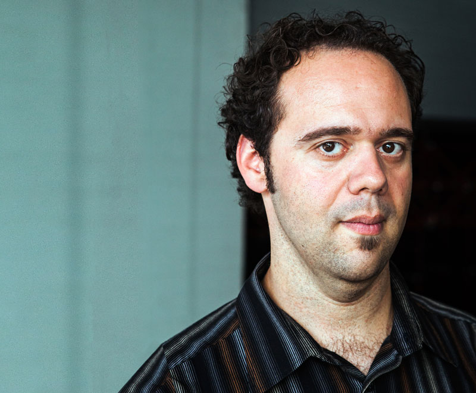
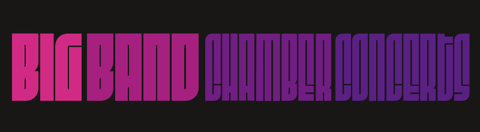
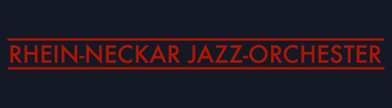
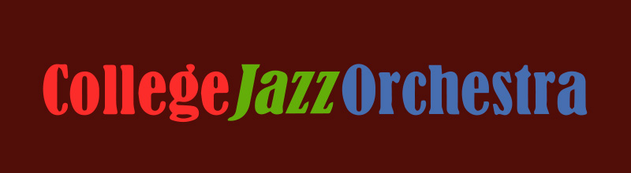
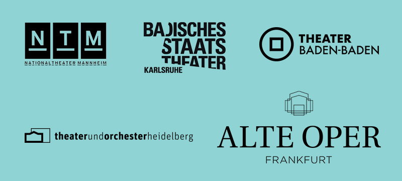
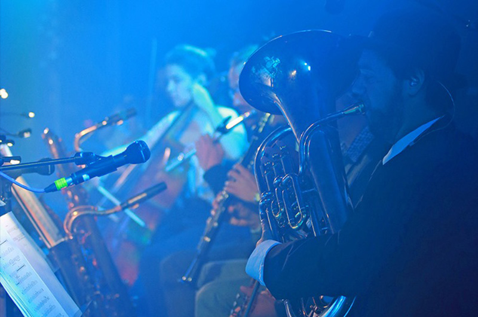
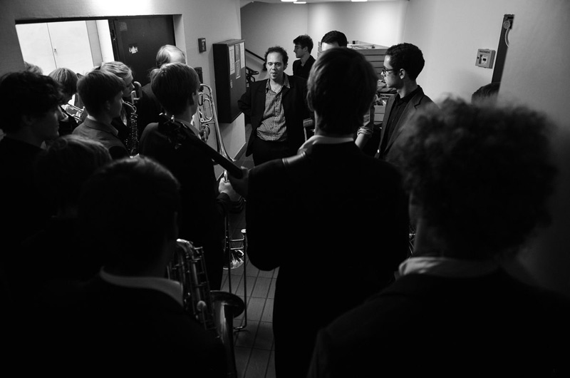
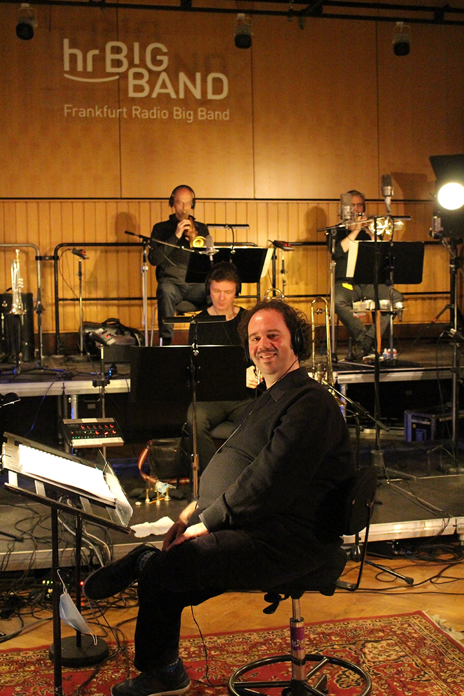
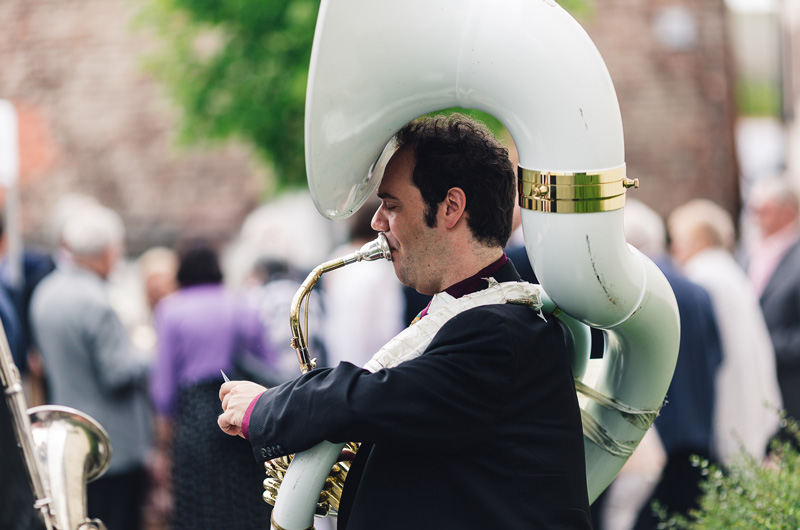

Ausbildung / Education

Studierte zunächst Philosophie und Journalismus an der Universität Karlsruhe, bevor er sich 2001 für das Fach Jazz-Posaune an der Hochschule für Musik Nürnberg-Augsburg entschied. An die Musikhochschule Mannheim wechselte er im Jahr 2002, wo er bei Prof. Jürgen Friedrich zusätzlich Komposition und Arrangement studierte und im Sommer 2007 abschloß.
Unter der Leitung von Peter Herbolzheimer spielte er im Bundesjugend-Jazzorchester, daneben in den Landesjugend-Jazzorchestern Baden-Württemberg und Bayern.
Kurator / Curator / Musical Director

Kurator einer Konzertreihe für Bigbands in Mannheim:
bigbandchamberconcerts.de
Musikalische sowie Gesamt-Leitung (Vereins-Vorsitzender) der Bigband Kicks’n Sticks
kicksnsticks.de

Musikalische Leitung des Rhein-Neckar Jazz Orchesters
rhein-neckar-jazz-orchester.de

Leiter der Bigband der Universität Mannheim
collegejazz.uni-mannheim.de
Mitglied im Kuratorium der Kulturstiftung Rhein-Neckar-Kreis
Gastdirigenten-Tätigkeit u.a. mit Lucerne Jazz Orchestra, Xavier Naidoo, Marc Marshall, Janice Dixon
Spieler / Performing Artist
Posaune, Euphonium, Sousafon, Tuba
Konzerte, Tourneen und Zusammenarbeiten u.a. mit
- Get Well Soon
- Blassportgruppe
- Moop Mama
- Kenny Wheeler
- Bobby Shew
- mathias rüegg
- Ack van Rooyen
- Jiggs Whigham
- Ed Partyka
- Whiskydenker
- Mumuvitch Disko Orkestar
Studio-Musiker u.a. für
Engagements u.a. an folgenden Theatern:

Schreiben / Writing

Arrangierte u.a. für
- Ingolf Burkhardt
- Johannes Enders
- Thomas Siffling
- Stephanie Neigel
- Peter Lehel
- Saxofon-Quartett Famdüsax
Komponierte für
Haben Sie Interesse an meinen Arbeiten? Einige finden Sie im Bundesbigbandarchiv oder kontaktieren Sie mich persönlich wegen eines Werke-Katalogs.
Unterricht / Teaching
Lehrt an der Staatlichen Hochschule für Musik und darstellende Kunst Mannheim, der Universität Mannheim, dem Badischen Konservatorium Karlsruhe, dem Johann-Sebastian-Bach-Gymnasium Mannheim in den Fächern
- (Jazz-)Posaune
- Euphonium
- Jazz-Ensemble-Leitung
Workshop-Dozent für Bigbands: bigband-workshop.de
Privat-Unterricht: mail@jochenwelsch.com

In Action

Veranstaltungen / Events

Umrahmungen für Ihre privaten Familienfeiern oder Firmen-Events sind in verschiedenen Besetzungen möglich und vermittelbar:
oder wir stellen gemeinsam eine Band ganz für Ihre persönlichen Anforderungen zusammen, mit dem Delta-Apparillo!